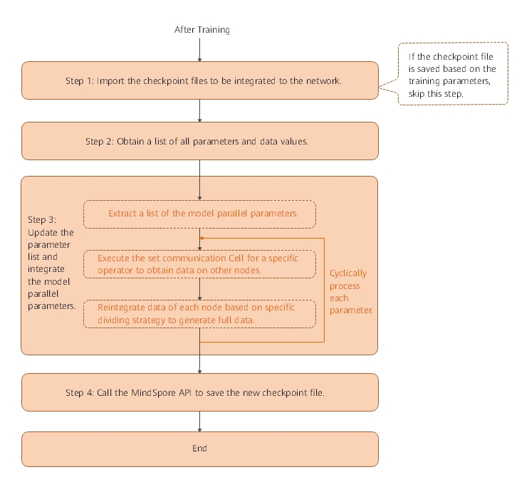

Saving and Loading Model Parameters in the Hybrid Parallel Scenario
Overview
Background
In the MindSpore model parallel scenario, each instance process stores only the parameter data on the current node. The parameter data of a model parallel Cell on each node is a slice of the complete parameter data. For example, the complete parameter data shape is [8, 8], and the parameter data on each node is a part of the data, for example, shape [2, 8].
In the auto parallel scenario, MindSpore automatically generates the dividing strategy. The MindSpore checkpoint module supports automatic integrating, saving, and loading.
In the hybrid parallel scenario, the dividing strategy is implemented by users. MindSpore saves only the data corresponding to each node. Users need to integrate, save, and load the checkpoint files by themselves. This tutorial describes how to integrate, save, and load checkpoint files in the hybrid parallel scenario.
Application Scenario
If you encounter the following scenarios, refer to this tutorial to integrate, save, and load checkpoint files:
Scenario 1: multi-device training and single-device inference
The following describes the overall process of training on 64 devices and inference on a single device:
Execute the training to automatically generate the checkpoint files.
Integrate the saved checkpoint files.
Integrate the divided model parameters based on the specific dividing strategy to generate a new checkpoint file.
Load the new checkpoint file in the single-GPU environment and call the export API to export the model for inference as required.
If the number of GPUs in a cluster in the checkpoint saving environment is the same as that in the loading environment, for example, if the checkpoint files are saved and loaded in the same training environment or training and inference is performed on a single device, you do not need to perform integration, saving and loading.
Scenario 2: The training is divided into multiple stages, and the cluster size in each stage is different.
For example, in the training stage 1, the training environment with 64 devices is used, and in the training stage 2, the training environment with 56 devices is used. The overall operation process is as follows:
Execute the training in stage 1 to automatically generate the checkpoint files.
Integrate the saved checkpoint files.
Integrate the divided model parameters based on the specific dividing strategy to generate a new checkpoint file.
Load the checkpoint file that is integrated and saved in the stage 2 cluster.
During the loading, you need to redivide the parameter data in the checkpoint file based on the new training environment configuration.
Perform stage 2 training.
Integrating the Saved Checkpoint Files
Overall Process
Import the checkpoint files to be integrated to the network and obtain the list of all parameters through the API provided by MindSpore. See steps 1 and 2 in the following figure.
Then, update the parameter list and integrate the model parallel parameters. See step 3 in the following figure.
Finally, save the updated parameter list to a file through the API provided by MindSpore to generate a new checkpoint file. See step 4 in the following figure.

Preparations
Importing the Checkpoint Files to the Network
Define the network, call the load_checkpoint and load_param_into_net APIs, and import the checkpoint files to the network.
param_dict = load_checkpoint(./CKP_1-4_32.ckpt) # checkpoint file name
net = Net()
opt = Momentum(learning_rate=0.01, momentum=0.9, params=net.get_parameters())
net = TrainOneStepCell(net, opt)
load_param_into_net(net, param_dict)
In the preceding information:
load_checkpoint: loads the checkpoint model parameter file and returns a parameter dictionary.load_param_into_net: loads model parameter data to the network.CKP_1-4_32.ckpt: name of the saved checkpoint model parameter file.
If a new checkpoint file is directly saved in the training environment based on the current training data and the parameter values already exist on the network, skip this step and you do not need to import the checkpoint files.
Obtaining a List of All Parameters on the Network
Call the parameters_and_names API to obtain all parameter data on the network.
param_dict = {}
for _, param in net.parameters_and_names():
param_dict[param.name] = param
Integrate the Model Parallel Parameters
The following uses a model parameter as an example to describe a specific integration process.
The parameter name is model_parallel_weight and the data is Tensor [[1, 2, 3, 4], [5, 6, 7, 8]].
The dividing strategy is to perform dividing in a 4-device scenario based on [2, 2]. That is, the data is first divided into two slices in the row dimension, then the two slices are respectively divided into two smaller slices in the column dimension, and finally four slices are obtained. Data distribution after dividing is as follows:
Device0 |
Device1 |
Device2 |
Device3 |
|---|---|---|---|
Value [1, 2] |
Value [3, 4] |
Value [5, 6] |
Value [7, 8] |
Obtain the data value on the current node for model parallel parameters.
param_data = param_dict[“model_parallel_weight”] param_data_moments = param_dict[“moments.model_parallel_weight”]
To ensure that the parameter update speed remains unchanged, you need to integrate the parameters saved in the optimizer, for example, moments.model_parallel_weight.
Define, instantiate, and execute the
AllGatherCell, and obtain data on all devices.from mindspore.nn.cell import Cell from mindspore.ops.operations.comm_ops import AllGather class AllGatherCell(Cell): """ Allgather cell, used in model parallel scenario. To allgather the selected parameter slice from each device. """ def __init__(self): super(AllGatherCell, self).__init__(auto_prefix=False) self.allgather = AllGather() def construct(self, x): x = self.allgather(x) return x allgather_net = AllGatherCell() param_data = allgather_net(param_data) param_data_moments = allgather_net(param_data_moments)
The value of
param_datais the integration of data on each device in dimension 0. The data value is [[1, 2], [3, 4], [5, 6], [7, 8]], and the shape is [4, 2]. The raw data value ofparam_datais [[1, 2, 3, 4], [5, 6, 7, 8]], and the shape is [2, 4]. The data needs to be redivided and integrated.Divide the data obtained from
AllGather.slice_list = np.split(param_data.asnumpy(), 4, axis=0) # 4：group_size, number of nodes in cluster slice_lis_moments = np.split(param_data_moments.asnumpy(), 4, axis=0) # 4: group_size, number of nodes in cluster
The result of
param_datais as follows:slice_list[0] --- [1, 2] Slice data on device0 slice_list[1] --- [3, 4] Slice data on device1 slice_list[2] --- [5, 6] Slice data on device2 slice_list[3] --- [7, 8] Slice data on device3
Reassemble data based on the site requirements.
In the following code, slice 1 and slice 2, slice 3 and slice 4 are first spliced by column, and then the obtained data is spliced by row.
slice_line1 = np.concatenate((slice_list[0], slice_list[1]), axis=1) # result [1,2,3,4] slice_line2 = np.concatenate((slice_list[2], slice_list[3]), axis=1) # result [5,6,7,8] whole_data = np.concatenate((slice_line1, slice_line2), axis=0) # result [[1, 2, 3, 4], [5, 6, 7, 8]] slice_moments_line1 = np.concatenate((slice_lis_moments[0], slice_lis_moments[1]), axis=1) slice_moments_line2 = np.concatenate((slice_lis_moments[2], slice_lis_moments[3]), axis=1) whole_moments_data = np.concatenate((slice_moments_line1, slice_moments_line2), axis=0)
Assign values to model parameters.
param_data = Tensor(whole_data) param_data_moments = Tensor(whole_moments_data)
If there are multiple model parallel parameters, repeat steps 1 to 5 to process them one by one.
If the data obtained in step 2 is the final data, skip the following steps. That is, the dividing strategy is to perform dividing only on shape0 and each device loads different slice data.
Saving the Data and Generating a New Checkpoint File
Convert
param_dicttoparam_list.param_list = [] for (key, value) in param_dict.items(): each_param = {} each_param["name"] = key if isinstance(value.data, Tensor): param_data = value.data else: param_data = Tensor(value.data) each_param["data"] = param_data param_list.append(each_param）Call the
save_checkpointAPI to write the parameter data to a file and generate a new checkpoint file.save_checkpoint(param_list, “./CKP-Integrated_1-4_32.ckpt”)
In the preceding information:
save_checkpoint: saves network model parameters to a file.CKP-Integrated_1-4_32.ckpt: name of the generated checkpoint model parameter file.
Loading the Integrated and Saved Checkpoint File
Overall Process
If you need to load the integrated and saved checkpoint file to multi-device training or inference, divide the parallel parameter data based on the new strategy before loading the model parameters to the network. The following steps are implemented in the pre-training script. Steps 1 and 3 are the same as the strategy of checkpoint loading in a single-node system. Step 2 is added to divide model parallel parameters. In the single-device training/inference scenario, data dividing is not involved. In this case, step 2 can be skipped.
Step 1: Loading the Checkpoint File
Call the load_checkpoint API to load model parameter data from the checkpoint file.
param_dict = load_checkpoint("./CKP-Integrated_1-4_32.ckpt")
load_checkpoint: loads the checkpoint model parameter file and returns a parameter dictionary.CKP-Integrated_1-4_32.ckpt: name of the checkpoint model parameter file to be loaded.
Step 2: Dividing a Model Parallel Parameter
The following uses a specific model parameter as an example. The parameter name is model_parallel_weight, the data value is Tensor [[1, 2, 3, 4], [5, 6, 7, 8]], and the dividing strategy is to perform dividing in the two-device scenario based on [2, 1]. Data distribution after dividing is as follows:
Device0 |
Device1 |
|---|---|
Value [1, 2, 3, 4] |
Value [5, 6, 7, 8] |
Divide the model parameter data.
In the following code example, data is divided into two slices in dimension 0.
new_param = parameter_dict[“model_parallel_weight”] slice_list = np.split(new_param.data.asnumpy(), 2, axis=0) new_param_moments = parameter_dict[“moments.model_parallel_weight”] slice_moments_list = np.split(new_param_moments.data.asnumpy(), 2, axis=0)
Data after dividing:
slice_list[0] --- [1, 2, 3, 4] Corresponding to device0 slice_list[1] --- [5, 6, 7, 8] Corresponding to device1
Similar to slice_list, slice_moments_list is divided into two tensors with the shape of [1, 4].
Load the corresponding data slice on each node.
Obtain rank_id of the current node and load data based on rank_id.
rank = get_rank() tensor_slice = Tensor(slice_list[rank]) tensor_slice_moments = Tensor(slice_moments_list[rank])
get_rank: obtains the ID of the current device in the cluster.
Modify values of model parameters.
new_param.set_parameter_data(tensor_slice) new_param_moments.set_parameter_data(tensor_slice_moments)
set_parameter_data: sets the value of a model parameter. The API parameter type is Tensor or number.
Step 3: Loading the Modified Parameter Data to the Network
Call the load_param_into_net API to load the model parameter data to the network.
net = Net()
opt = Momentum(learning_rate=0.01, momentum=0.9, params=parallel_net.get_parameters())
load_param_into_net(net, param_dict)
load_param_into_net(opt, param_dict)
Example
Scenario Description
Overall scenario: The training is divided into two stages. The cluster scales in the two stages are different. The MatMul operator at the FC layer is simulated to run in parallel.
User process:
Execute stage 1 training. There are four devices in stage 1 training environment. The weight shape of the MatMul operator on each device is [2, 8]. Checkpoint files are automatically exported during the training.
Execute the script to integrate checkpoint files. Based on the specific dividing strategy, integrate the divided model parameters to generate the integrated checkpoint file.
Execute stage 2 training: There are two devices in stage 2 training environment. The weight shape of the MatMul operator on each device is [4, 8]. Load the initialized model parameter data from the integrated checkpoint file and then perform training.
For details about the distributed environment configuration and training code, see Distributed Training.
This document provides the example code for integrating checkpoint files and loading checkpoint files before distributed training. The code is for reference only.
Example Code
Run the following script to integrate the checkpoint files:
python ./integrate_checkpoint.py "Path and name of the checkpoint file to be integrated" "Path and name of the checkpoint file generated after integration"
integrate_checkpoint.py:
import numpy as np import os import mindspore.nn as nn from mindspore import context from mindspore import Tensor, Parameter from mindspore.ops import operations as P from mindspore.ops.operations.comm_ops import AllGather from mindspore.communication.management import init from mindspore.train.serialization import save_checkpoint, load_checkpoint devid = int(os.getenv('DEVICE_ID')) context.set_context(mode=context.GRAPH_MODE, device_target='Ascend', save_graphs=True, device_id=devid) init() class Net(nn.Cell): def __init__(self,weight_init): super(Net, self).__init__() self.weight = Parameter(Tensor(weight_init), "model_parallel_weight", layerwise_parallel=True) self.fc = P.MatMul(transpose_b=True) def construct(self, x): x = self.fc(x, self.weight1) return x class AllGatherNet(Cell): """ Allgather cell, used in model parallel scenario. To allgather the selected parameter slice from each device. """ def __init__(self): super().__init__() self.allgather = AllGather() def construct(self, x): x = self.allgather(x) return x def integrate_ckpt_file(old_ckpt_file, new_ckpt_file): weight = np.ones([2, 8]).astype(np.float32) net = Net(weight) opt = Momentum(learning_rate=0.01, momentum=0.9, params=net.get_parameters()) net = TrainOneStepCell(net, opt) # load CheckPoint into net param_dict = load_checkpoint(old_ckpt_file) load_param_into_net(net, param_dict) param_dict = {} for _, param in net.parameters_and_names(): param_dict[param.name] = param for paramname in ["model_parallel_weight", "moments.model_parallel_weight"]: # get layer wise model parallel parameter layerwise_param = param_dict[paramname] if isinstance(layerwise_param.data, Tensor): param_data = layerwise_param.data else: param_data = Tensor(layerwise_param.data) # merge the parallel parameters of the model allgather_net = get_allgather_cell() param_data = allgather_net(param_data) layerwise_param.set_parameter_data(param_data) # convert param_dict to list type data param_list = [] for (key, value) in param_dict.items(): each_param = {} each_param["name"] = key if isinstance(value.data, Tensor): param_data = value.data else: param_data = Tensor(value.data) each_param["data"] = param_data param_list.append(each_param) # call the API to generate a new CheckPoint file save_checkpoint(param_list, new_ckpt_file) return if __name__ == "__main__": try: old_ckpt_file = sys.argv[1] new_ckpt_file = sys.argv[2] integrate(old_ckpt_file, new_ckpt_file) except: print("Fail to integrate checkpoint file) sys.exit(-1)
In the preceding information:
mode=context.GRAPH_MODE: sets the running mode to graph mode for distributed training. (The PyNative mode does not support parallel running.)device_id: physical sequence number of a device, that is, the actual sequence number of the device on a computer where the device is located.init: completes the distributed training initialization.
The command output is as follows.
Before the script is executed, the parameter values in the checkpoint files are as follows:
device0： name is model_parallel_weight value is [[0.87537426 1.0448935 0.86736983 0.8836905 0.77354026 0.69588304 0.9183654 0.7792076] [0.87224025 0.8726848 0.771446 0.81967723 0.88974726 0.7988162 0.72919345 0.7677011]] name is learning_rate value is [0.01] name is momentum value is [0.9] name is moments.model_weight value is [[0.2567724 -0.07485991 0.282002 0.2456022 0.454939 0.619168 0.18964815 0.45714882] [0.25946522 0.24344791 0.45677605 0.3611395 0.23378398 0.41439137 0.5312468 0.4696194]] device1： name is model_parallel_weight value is [[0.9210751 0.9050457 0.9827775 0.920396 0.9240526 0.9750359 1.0275179 1.0819869] [0.73605865 0.84631145 0.9746683 0.9386582 0.82902765 0.83565056 0.9702136 1.0514659]] name is learning_rate value is [0.01] name is momentum value is [0.9] name is moments.model_weight value is [[0.2417504 0.28193963 0.06713893 0.21510397 0.23380603 0.11424308 0.0218009 -0.11969765] [0.45955992 0.22664294 0.01990281 0.0731914 0.27125207 0.27298513 -0.01716102 -0.15327111]] device2： name is model_parallel_weight value is [[1.0108461 0.8689414 0.91719437 0.8805056 0.7994629 0.8999671 0.7585804 1.0287056 ] [0.90653455 0.60146594 0.7206475 0.8306303 0.8364681 0.89625114 0.7354735 0.8447268]] name is learning_rate value is [0.01] name is momentum value is [0.9] name is moments.model_weight value is [[0.03440702 0.41419312 0.24817684 0.30765256 0.48516113 0.24904746 0.57791173 0.00955463] [0.13458519 0.6690533 0.49259356 0.28319967 0.25951773 0.16777472 0.45696738 0.24933104]] device3： name is model_parallel_weight value is [[0.7147005 0.9168278 0.80178416 0.6258351 0.8413766 0.5909515 0.696347 0.71359116] [0.20506378 0.03691584 0.2454556 0.12978578 0.19065076 0.23904312 0.27509746 0.34614682]] name is learning_rate value is [0.01] name is momentum value is [0.9] name is moments.model_parallel_weight value is [[0.14152306 0.5040985 0.24455397 0.10907605 0.11319532 0.19538902 0.01208619 0.40430856] [-0.7773164 -0.47611716 -0.6041424 -0.6144473 -0.2651842 -0.31909415 -0.4510405 -0.12860501]]
After the script is executed, the parameter values in the checkpoint files are as follows:
name is model_parallel_weight value is [[1.1138763 1.0962057 1.3516843 1.0812817 1.1579804 1.1078343 1.0906502 1.3207073] [0.916671 1.0781671 1.0368758 0.9680898 1.1735439 1.0628364 0.9960786 1.0135143] [0.8828271 0.7963984 0.90675324 0.9830291 0.89010954 0.897052 0.7890109 0.89784735] [1.0011744 1.0840297 1.0201758 1.0882459 0.94232416 1.0775206 1.0195118 1.0528734] [1.0053468 0.98402303 0.99762845 0.97587246 1.0259694 1.0055295 0.99420834 0.9496847] [1.0851002 1.0295962 1.0999886 1.0958165 0.9765328 1.146529 1.0970603 1.1388365] [0.7147005 0.9168278 0.80178416 0.6258351 0.8413766 0.5909515 0.696347 0.71359116] [0.20506378 0.03691584 0.2454556 0.12978578 0.19065076 0.23904312 0.27509746 0.34614682]] name is learning_rate value is [0.01] name is momentum value is [0.9] name is moments.model_parallel_weight value is [[0.2567724 -0.07485991 0.282002 0.2456022 0.454939 0.619168 0.18964815 0.45714882] [0.25946522 0.24344791 0.45677605 0.3611395 0.23378398 0.41439137 0.5312468 0.4696194 ] [0.2417504 0.28193963 0.06713893 0.21510397 0.23380603 0.11424308 0.0218009 -0.11969765] [0.45955992 0.22664294 0.01990281 0.0731914 0.27125207 0.27298513 -0.01716102 -0.15327111] [0.03440702 0.41419312 0.24817684 0.30765256 0.48516113 0.24904746 0.57791173 0.00955463] [0.13458519 0.6690533 0.49259356 0.28319967 0.25951773 0.16777472 0.45696738 0.24933104] [0.14152306 0.5040985 0.24455397 0.10907605 0.11319532 0.19538902 0.01208619 0.40430856] [-0.7773164 -0.47611716 -0.6041424 -0.6144473 -0.2651842 -0.31909415 -0.4510405 -0.12860501]]
Execute stage 2 training and load the checkpoint file before training. The training code needs to be supplemented based on the site requirements.
import numpy as np import os import mindspore.nn as nn from mindspore import context from mindspore import Tensor, Parameter from mindspore.ops import operations as P from mindspore.train.serialization import load_checkpoint, load_param_into_net from mindspore.communication.management import init devid = int(os.getenv('DEVICE_ID')) context.set_context(mode=context.GRAPH_MODE,device_target='Ascend',save_graphs=True, device_id=devid) init() class Net(nn.Cell): def __init__(self,weight_init): super(Net, self).__init__() self.weight = Parameter(Tensor(weight_init), "model_parallel_weight", layerwise_parallel=True) self.fc = P.MatMul(transpose_b=True) def construct(self, x): x = self.fc(x, self.weight1) return x def train_mindspore_impl_fc(input, label, ckpt_file): param_dict = load_checkpoint(ckpt_file) for paramname in ["model_parallel_weight", "moments.model_parallel_weight"]: # get layer wise model parallel parameter new_param = parameter_dict[paramname] # split the model parameter data slice_list = np.split(new_param.data.asnumpy(), 2, axis=0) # Load the corresponding data slice rank = get_rank() tensor_slice = Tensor(slice_list[rank]) # modify model parameter data values new_param.set_parameter_data(tensor_slice) # load the modified parameter data into the network weight = np.ones([4, 8]).astype(np.float32) net = Net(weight) load_param_into_net(net, param_dict) opt = Momentum(learning_rate=0.01, momentum=0.9, params=parallel_net.get_parameters()) load_param_into_net(opt, param_dict) # train code ... if __name__ == "__main__": input = np.random.random((4, 8)).astype(np.float32) print("mean = ", np.mean(input,axis=1, keepdims=True)) label = np.random.random((4, 4)).astype(np.float32) train_mindspore_impl_fc(input, label, weight1)
Parameter values after loading:
device0： name is model_parallel_weight value is [[0.87537426 1.0448935 0.86736983 0.8836905 0.77354026 0.69588304 0.9183654 0.7792076] [0.87224025 0.8726848 0.771446 0.81967723 0.88974726 0.7988162 0.72919345 0.7677011] [0.8828271 0.7963984 0.90675324 0.9830291 0.89010954 0.897052 0.7890109 0.89784735] [1.0011744 1.0840297 1.0201758 1.0882459 0.94232416 1.0775206 1.0195118 1.0528734]] name is learning_rate value is [0.01] name is momentum value is [0.9] name is moments.model_weight value is [[0.2567724 -0.07485991 0.282002 0.2456022 0.454939 0.619168 0.18964815 0.45714882] [0.25946522 0.24344791 0.45677605 0.3611395 0.23378398 0.41439137 0.5312468 0.4696194] [0.2417504 0.28193963 0.06713893 0.21510397 0.23380603 0.11424308 0.0218009 -0.11969765] [0.45955992 0.22664294 0.01990281 0.0731914 0.27125207 0.27298513 -0.01716102 -0.15327111]] device1： name is model_parallel_weight value is [[1.0053468 0.98402303 0.99762845 0.97587246 1.0259694 1.0055295 0.99420834 0.9496847] [1.0851002 1.0295962 1.0999886 1.0958165 0.9765328 1.146529 1.0970603 1.1388365] [0.7147005 0.9168278 0.80178416 0.6258351 0.8413766 0.5909515 0.696347 0.71359116] [0.20506378 0.03691584 0.2454556 0.12978578 0.19065076 0.23904312 0.27509746 0.34614682]] name is learning_rate value is [0.01] name is momentum value is [0.9] name is moments.model_weight value is [[0.03440702 0.41419312 0.24817684 0.30765256 0.48516113 0.24904746 0.57791173 0.00955463] [0.13458519 0.6690533 0.49259356 0.28319967 0.25951773 0.16777472 0.45696738 0.24933104] [0.14152306 0.5040985 0.24455397 0.10907605 0.11319532 0.19538902 0.01208619 0.40430856] [-0.7773164 -0.47611716 -0.6041424 -0.6144473 -0.2651842 -0.31909415 -0.4510405 -0.12860501]]